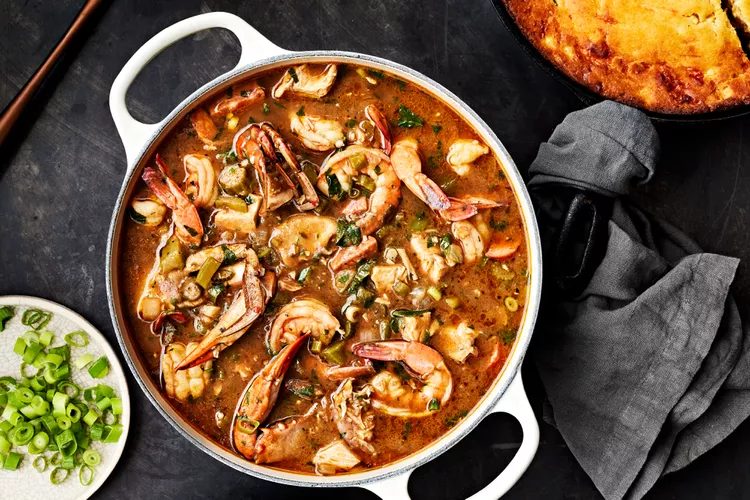

Gumbo

Description
Seafood gumbo with chicken, sausage, blue crabs, shrimp and lots of okra
Recipe and picture taken from:
https://www.foodandwine.com/recipes/seafood-gumbo
Ingredients:
- 3/4 cup canola oil
- 1 cup all purpose flour (about 4 1/4 ounces)
- 1 large yellow onion, chopped (about 2 cups)
- 2 large celery stalks, chopped (about 1 cup)
- 1 green bell pepper, chopped (about 1 cup)
- 4 garlic cloves, finely chopped (about 4 teaspoons)
- 1 cup tomato puree (from 1 [15-ounce] can)
- 2 tablespoons kosher salt
- 1 tablespoon black pepper
- 1 1/2 teaspoons cayenne pepper
- 1 1/2 teaspoons onion powder
- 1 teaspoon garlic powder
- 1 teaspoon paprika
- 1 teaspoon dried or fresh thyme leaves
- 3 dried bay leaves
- 4 quarts chicken stock
- 1 pound fresh or thawed frozen okra, cut into 1/4-inch-thick slices (about 4 cups)
- 2 tablespoons olive oil
- 1 1/2 pounds roasted boneless, skinless chicken breasts and thighs, cut into 1-inch pieces (about 4 cups)
- 8 ounces andouille sausage (such as Zummo’s), halved lengthwise and cut into 1/4-inch-thick slices
- 2 (6-ounce) raw blue crabs, cleaned and quartered
- 6 dashes (about 1 1/2 teaspoons) hot sauce (such as Crystal or Louisiana), plus more for serving
- 2 tablespoons filé powder, plus more for garnish
- 1 pound raw large shrimp, peeled and deveined
- 1 cup chopped fresh flat-leaf parsley
- 3 scallions, trimmed and thinly sliced, plus more for garnish
- Cooked jasmine rice and cornbread, for serving
Steps:
- Preheat oven to 375°F. Heat canola oil in a large stockpot over medium until shimmering, about 5 minutes. Gradually add flour, stirring constantly with a wooden spoon, until well combined. Cook, stirring often, until roux is smooth and chocolate brown in color, about 15 minutes. (Be sure to scrape the bottom of the pot as you stir to prevent the roux from scorching.)
- Add onion, celery, bell pepper, and garlic to roux; cook, stirring occasionally, until vegetables are softened, about 10 minutes. Add tomato puree, salt, black pepper, cayenne pepper, onion powder, garlic powder, paprika, thyme, and bay leaves; stir to combine. Gradually stir in stock until smooth. Bring to a boil over medium, stirring occasionally. Reduce heat to medium-low, and gently simmer, uncovered, stirring occasionally, 20 minutes, skimming off any oil and white bits that rise to the surface.
- Toss together okra and olive oil on a large rimmed baking sheet until evenly coated. Spread in an even layer, and roast in preheated oven until okra is slightly dry and firm to the touch, 15 to 20 minutes.
- Stir roasted okra, chicken, and andouille sausage into mixture in stockpot; simmer over medium-low, stirring occasionally, until heated through, about 25 minutes. Stir in crabs and hot sauce; cook until crabs are bright red, about 5 minutes. Stir in filé powder quickly to prevent lumps. Stir in shrimp, parsley, and scallions. Turn off heat; let stand, uncovered, until shrimp are pink and cooked through, 5 to 7 minutes. Remove and discard bay leaves.
- To serve, ladle gumbo into shallow bowls, and top each with a heaping spoonful of rice. Garnish with scallions and filé powder. Serve with additional rice, cornbread, and additional hot sauce.